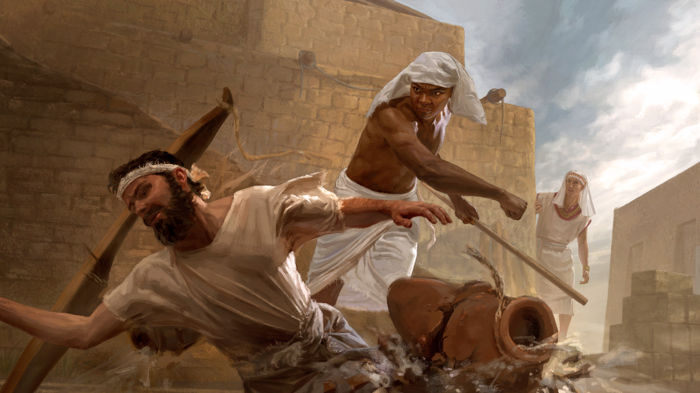
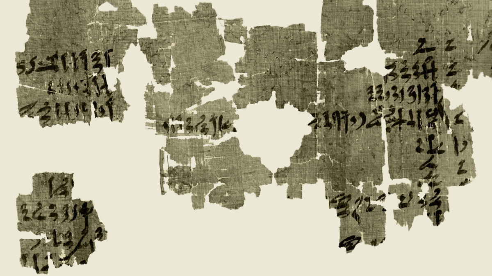
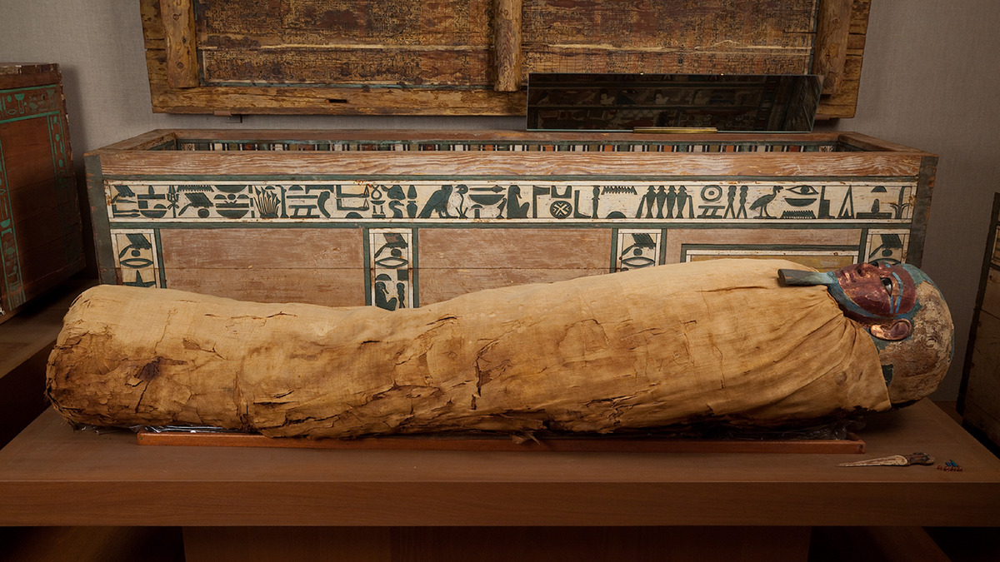

10 Moisés
Moisés tomou a decisão certa
Leia o relato na Bíblia: Êxodo 2:11-22; Atos 7:22-29; Hebreus 11:24-26
Tempo do estudo: 30 minutos
Cada parágrafo abaixo traz o conteúdo resumido, com as frases citadas do capítulo, os textos bíblicos escritos por extenso e um comentário pronto. O texto oficial completo está no jw.org e no JW Library: em cada parágrafo há um link que abre direto no ponto certo.
O nome Moisés foi dado pela princesa egípcia que o adotou, não pelos pais hebreus. Ela o escolheu porque o nome significa algo como “salvo da água”, e foi assim que ela o resgatou. Provavelmente esperava que ele fizesse parte da corte, e deve ter ficado orgulhosa de vê-lo receber a melhor educação do Egito.
Moisés se tornou um jovem admirável, “poderoso em palavras e em ações”. Ele poderia ter buscado riquezas, destaque e prazeres no Egito. Mas sabia que esse tipo de vida iria afastá-lo de Jeová. Então tinha uma decisão a tomar: O que ele faria com a sua vida?
Quando Moisés tinha 40 anos de idade, deixou clara a decisão: recusou ser chamado filho da filha de Faraó e escolheu ser maltratado com o povo de Deus em vez de desfrutar os prazeres temporários do pecado. Foi a decisão correta, e essa decisão mostrou sua fé e coragem. Mas o modo como agiu mostrava que ele ainda precisava fazer algumas mudanças.
Para Moisés, os israelitas eram “seus irmãos”, e ele queria ajudá-los. Um dia viu um egípcio, provavelmente um dos supervisores, espancando um israelita. Moisés “olhou para um lado e para o outro”, talvez procurando alguém que ajudasse o escravo, mas não viu ninguém. Então “matou o egípcio”. Foi de propósito, ou a raiva o fez bater mais forte do que pretendia? O relato não diz. Sabendo do perigo, Moisés escondeu o corpo na areia.

No dia seguinte, Moisés tentou separar a briga entre dois escravos hebreus. O que estava errado respondeu: “Quem o designou príncipe e juiz sobre nós? Você pretende me matar assim como matou o egípcio?” A morte do egípcio não era mais segredo. Sua vida estava em perigo.
As coisas não saíram como Moisés imaginava. “Ele achava que os seus irmãos compreenderiam que Deus estava lhes dando salvação pela mão dele, mas eles não compreenderam isso.” Parece que Moisés se via como escolhido por Deus para livrar Israel. Só que não entendia que aquele não era o tempo de Jeová livrar seu povo. E não levou em conta que o povo não confiaria num hebreu criado pela realeza egípcia.
O que Moisés iria escolher: ter riqueza e destaque, ou defender o povo de Jeová?
Aos olhos de Deus, Moisés ainda não estava pronto. É verdade que ele até tinha coragem, era forte e “era poderoso em palavras”. Mas faltava uma qualidade que tem muito valor para Jeová: a mansidão. Agindo num momento de raiva, matou um egípcio, e Faraó logo ficou sabendo.
Sem dar chance de explicação, Faraó decidiu matá-lo, e Moisés fugiu do Egito. Não sabia o que ia acontecer e teve de deixar para trás riqueza, conforto e destaque. Isso exigiu muita coragem. Foi para Midiã, uma terra seca, onde passaria décadas como um “residente estrangeiro numa terra estrangeira”. Como seria a vida dele lá? Ele se tornaria o homem manso e humilde que Jeová queria?
Para considerar
De que maneiras Moisés mostrou coragem nessa época de sua vida?
Meu comentário comentário base
Analise mais a fundo
1. Existe alguma prova além da Bíblia de que os israelitas foram escravos no Egito?
(w20.03 30) A
Meu comentário comentário base

2. O que Moisés talvez tenha aprendido com seus pais? E o que ele provavelmente aprendeu quando foi “instruído em toda a sabedoria dos egípcios”?
(Atos 7:22; w02 15/6 10 §§ 2-5)
Meu comentário comentário base
3. Como os egípcios costumavam sepultar os mortos? O que eles devem ter sentido quando Moisés não apenas matou o egípcio, mas também escondeu o corpo na areia?
(it “Egito, egípcio” § 28) B
Meu comentário comentário base

4. Moisés fugiu para Midiã. O que os midianitas e os israelitas tinham em comum?
(it “Midiã, midianitas” n.º 2 §§ 1-2)
Meu comentário comentário base
Medite no que aprendeu
O que o exemplo de Moisés nos ensina sobre controlar a raiva?
Meu comentário comentário base
Moisés mostrou coragem ao escolher os alvos certos na vida. O que os jovens podem aprender com o exemplo dele? C
Meu comentário comentário base
De que outras maneiras você pode imitar a coragem que Moisés mostrou nesse relato?
Meu comentário comentário base
Pense no quadro completo
O que esse relato me ensina sobre Jeová?
Meu comentário comentário base
Como esse relato está relacionado com o propósito de Jeová?
Meu comentário comentário base
Quando Moisés for ressuscitado, o que eu gostaria de perguntar para ele sobre a época em que ele viveu no Egito e em Midiã?
Meu comentário comentário base
Aprenda mais
Veja como podemos imitar Moisés ao colocar os interesses de Jeová na frente dos nossos.
Vídeo “Imite os fiéis, não os infiéis: Imite Moisés, não o Faraó” (2:27), disponível no jw.org.
Ao pensar no seu futuro, Moisés abriu mão de riquezas para servir a Jeová. Seria prático fazer isso hoje?
Vídeo “Escolha uma carreira com um futuro eterno” (4:58), disponível no jw.org.
Roteiro de 30 minutos
Estudo de livro, oito parágrafos e as quatro seções de pergunta. Os tempos são referência: o que passar de um item, tire do outro.
Abertura com uma pergunta
“Se alguém oferecesse a vocês riqueza, fama e conforto, com a condição de ficarem longe de Jeová, seria fácil dizer não?” Depois diga onde o estudo vai chegar: Moisés disse não, mas ainda tinha algo a aprender.
Leitura dos oito parágrafos
Designe um irmão. Se preferir, divida em dois blocos: §1 a §3 e §4 a §8.
Leituras bíblicas com a assistência
Hebreus 11:24-26 e Atos 7:25. O primeiro mostra a decisão certa; o segundo mostra o que ele ainda não entendia.
Para considerar
As três coragens: recusar o palácio, defender o escravo, fugir sem nada. Aceite dois comentários e complete com o que faltar.
Analise mais a fundo, as quatro perguntas
Um comentário por pergunta. Na 1, peça que alguém comente a imagem A. Na 3, a imagem B explica por que esconder o corpo era tão grave.
Medite no que aprendeu
Três minutos para a raiva, que é o ponto mais prático do capítulo. Dois para os jovens, com a imagem C. Dois para as outras coragens.
Pense no quadro completo
O que aprendemos sobre Jeová, a paciência dele, e como os anos em Midiã fazem parte do propósito dele.
Encerramento
Recomende os dois vídeos e feche com a ideia de que o homem que matou com raiva se tornou o mais manso da terra.
Se o tempo apertar
Pode cortar: a pergunta 4 de “Analise mais a fundo”, resumindo em uma frase, e a última pergunta do quadro completo.
Não pode faltar: a decisão certa aos 40 anos, a falta de mansidão, que não era o tempo de Jeová, e o fato de que Jeová não desistiu dele.
Resumo: os pontos altos deste estudo
Para o encerramento, ou para revisar depois em casa.
O caminho que percorremos
- A decisão certa. Aos 40 anos, Moisés recusou o palácio e escolheu o povo de Deus. §1 a §3
- A coragem sem mansidão. Quis ajudar do jeito dele, matou um homem e foi rejeitado pelo povo. §4 a §6
- O que ainda faltava. A mansidão, e o tempo de Jeová. §7
- Recomeçar longe de tudo. Fugiu para Midiã, onde passaria décadas. §8
Os sete pontos altos
- O nome que a princesa deu já apontava para a vida que o palácio planejava para ele.
- Moisés sabia que a vida no Egito iria afastá-lo de Jeová, e decidiu como adulto, não por impulso.
- O prazer do pecado existe, mas é temporário. Moisés olhava para a recompensa.
- A decisão estava certa; o jeito de agir ainda não.
- Ele estava certo sobre o que Deus faria, e errado sobre quando e como.
- Coragem, força e boa fala não bastavam: faltava a mansidão.
- Jeová não descartou Moisés. Deu 40 anos para transformá-lo.
Três frases para o encerramento
- “Moisés tomou a decisão certa. Depois Jeová ensinou a ele o jeito certo.”
- “O homem que matou num momento de raiva se tornou o mais manso da terra.”
- “Jeová não olha só para o nosso pior erro. Ele olha para o que podemos nos tornar.”
Suas respostas
Cada campo já vem com um comentário pronto. O que você ajustar fica salvo automaticamente neste navegador, neste aparelho. Para levar para outro aparelho, ou guardar uma cópia, baixe o arquivo aqui e carregue no outro lado.
O arquivo é um .json com os seus comentários e as anotações marcadas como vistas. Carregar substitui o que estiver escrito nesta página, e a página avisa antes.
Preparação baseada no capítulo 10 do livro Ande Corajosamente com Deus, “Moisés tomou a decisão certa”. Publicações consultadas nas anotações: A Sentinela de março de 2020, p. 30; A Sentinela de 15/6/2002, p. 10; Estudo Perspicaz, verbetes “Egito, egípcio” e “Midiã, midianitas”. Bíblia: Tradução do Novo Mundo da Bíblia Sagrada (Edição de Estudo), wol.jw.org, com 491 versículos incluídos nesta cópia para funcionar sem internet.
Os resumos, os comentários base, as anotações coloridas e o roteiro são notas de preparação pessoal, não material publicado pelas Testemunhas de Jeová. O capítulo, as imagens e o texto da Bíblia são propriedade da Watch Tower Bible and Tract Society. O texto oficial completo está no jw.org e no JW Library, pelos links de cada parágrafo.